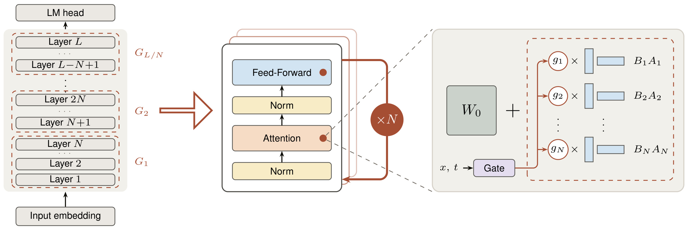
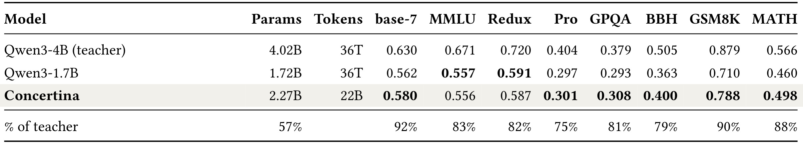
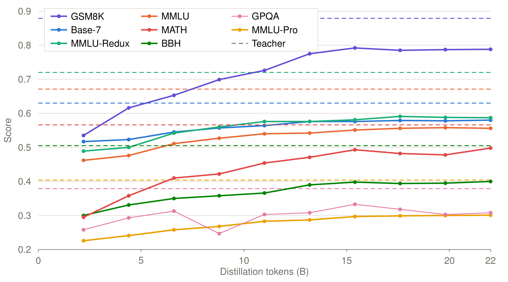
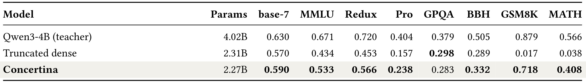
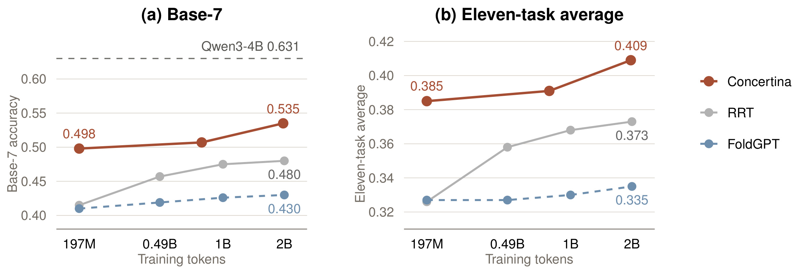
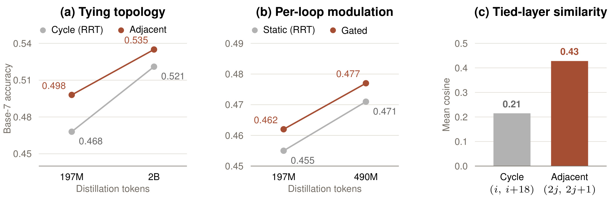
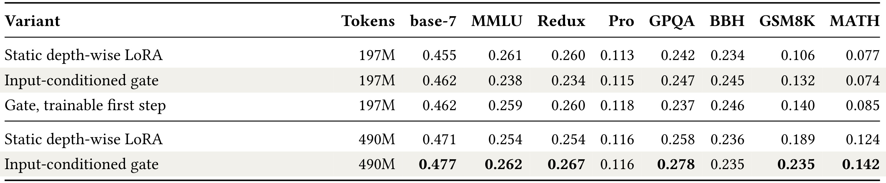
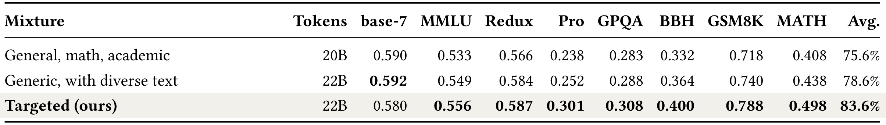
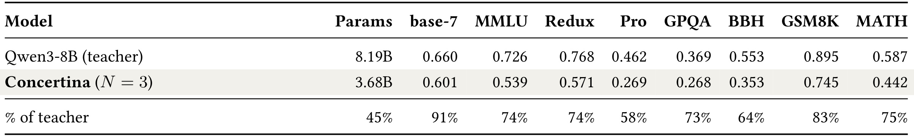
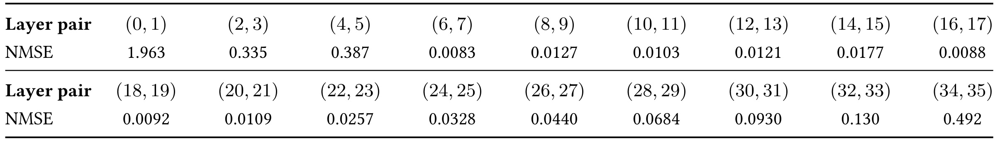

Folding Language Models into Themselves / 将语言模型折叠进自身
Concertina研究如何直接重组一个已经训练好的语言模型，让更小的学生继承教师权重中的能力。作者为Ziyang Zhang、Yubin Jing、Yuyao Li、Haofan Wang和Yichen Gong；第一作者主要机构为北京大学，合作包括佐治亚理工学院、清华大学与Lovart AI，前三位作者的工作在Lovart实习期间完成。论文于北京时间2026年11月13日20:36首次提交，入口为arXiv:2611.18113。官方代码仓库本轮可访问；没有独立运行其训练与评测，也未核验所有权重和数据资产的完整可用性。
小语言模型通常从零开始学习，即使教师权重已经编码了大量所需知识，学生仍要用海量数据重新建立这些能力。既有权重共享方案又可能绑定功能差异较大的层、冻结共享主干或对所有Token使用固定修正，使压缩后的学生远离教师，恢复能力继续消耗大量数据。
1. 背景和问题
得到一个适合较小设备的语言模型，常见选择有从零训练、剪枝、量化和蒸馏。它们压缩的对象并不相同：量化减少每个权重的表示位数，剪枝删除部分宽度或深度，蒸馏则让学生拟合教师输出。在通常的从零学生设置中，教师已经学会的知识只能通过新一轮训练样本和概率分布重新传入学生。因此，一个参数量更少的模型不必然是一个获得成本更低的模型。若原始教师用数十万亿Token训练，学生再从随机初始化走完整条路，主要成本仍来自重建能力的训练数据与计算。
本文选择一个具体的问题边界：教师权重已经可得，能否直接把它们组织成较小的学生，而不是仅把教师当作输出标签的来源？这不同于证明一个小模型可以从少量样本独立学会相同知识。学生初始化带有教师先前训练的结果，所以新增蒸馏Token只是继承之后的恢复预算。阅读“千倍更少数据”时必须保留这段继承链，否则容易把教师预训练开销误认为不存在。文章比较的是获得学生所需的新增训练量，而不是从原材料开始建立全部知识的总成本。
直接删层是最朴素的继承方法：保留若干教师层、删去其余层，再做恢复训练。这样确实减少参数和计算深度，但也删除了被移除层所承担的连续计算步骤。一个多选基准可能仍有较好分数，生成式数学推理却可能大幅下降。这里不是断言所有层都不可删除，而是提醒评估压缩时必须包含需要真正生成的任务。若只看困惑度或已趋饱和的常识选择题，保留知识可识别性和保留完整生成过程之间的差异就会被掩盖。
另一种办法是共享层：模型仍执行很多步，但多步重复使用同一组参数。这样把存储规模和计算深度拆开了。一个共享块可以反复处理隐藏状态，像运行多次同一段程序；然而不同深度的原始层并非完全相同。简单硬绑定可能迫使一个块同时承担两种不相容的角色，恢复训练就要解决结构本身造成的失配。Concertina的主要贡献不是首次提出循环或低秩更新，而是将教师层的分组方式、差分初始化与输入相关修正放到同一条可继承路径中。
作者特别对比了两类已有转换。RRT把相距较远的层绑定，例如第一半与第二半的对应层，并使用静态深度LoRA；FoldGPT先移除冗余块，再通过学习缩放共享部分层，而且冻结主干。它们都从教师出发，却在绑定拓扑、是否训练主权重、修正方式和训练损失上存在差别。因此，直接把完整配方的结果差值归因给一个新门控是不成立的。论文一方面比较已有公开配方，另一方面用固定训练设置逐轴控制拓扑与门控，二者回答的是不同问题。
为什么考虑相邻层？在残差网络中，每层对残差流添加一次更新。相邻深度可能执行更相似的功能更新，即使矩阵权重本身相差很大，输出方向仍更一致。作者的论证针对的是功能相似性，而不是说相邻权重的差矩阵天然低秩。后文明确指出这些差分可以接近满秩，甚至范数超过单个权重；低秩近似只是用有限新增参数保存部分差异。将“输出更像”和“矩阵更接近”分开，才能理解为什么仍需要蒸馏恢复，以及为什么首末层可能更难折叠。
共享块还面临输入差异。同一个循环步里，数学符号、普通词汇和选择题答案位置可能需要不同的计算行为。如果每步只使用固定低秩修正，所有Token得到相同的层身份。Concertina让输入隐藏状态选择修正的混合比例，使同一个共享块可以随Token变化，在原始层的近似角色之间调整。这个门控不是减少执行次数的早退路由，也不是只激活一个专家的稀疏MoE；它混合的是层差分，主要目的仍是恢复共享后的表达能力。
最后，结构继承不能代替训练数据覆盖。一个从教师初始化的学生，可能保留了大量知识，却损坏了读取和组织这些知识的路径。若恢复语料只覆盖泛化文本，知识型多选与数学生成未必同时恢复。文章为此把配方作为明确实验变量，比较通用文本、数学与学术数据、跨领域题目及合成问答。对推荐系统的模型压缩，这种问题也很具体：如果恢复集只包含高频曝光，稀疏任务、长尾内容和跨域组合可能依旧丢失，不能仅用总训练量解释恢复程度。
本文的主证据来自Qwen3系列两个规模、若干静态基准和受控训练对照。它没有完成推荐召回、CTR、在线业务或长上下文服务验证。因此，对推荐的意义首先是提供一种可研究的权重组织方式和验收思路。应先判断当前瓶颈是权重存储、前向计算还是KV缓存，只有存储受限而仍能承担原始深度执行时，这条路线才与问题直接匹配；若目标是减少每次请求计算，本文结果还不足以支持选择它。
在训练目标层面，继承还要求共享模型保留教师输出分布，而不是只学会某些正确答案。前向KL会关注教师给予非目标Token的概率，这些软关系可能包含语义相近、表达替代和不确定性；真实Token交叉熵则约束训练文本的目标。两者组合并不自动让所有部署行为保持，尤其在学生生成前缀逐渐偏离教师常见文本时，概率误差可能继续累积。因此，论文采用贪心数学生成来补充似然式选择题，是评估范围上的必要扩展，但仍没有覆盖多轮交互和长程行动。
另一个需要提前说明的概念是“教师分数保留”。它把不同任务学生分数除以各自教师分数后再聚合，适合描述相对恢复程度，却会受到教师原始能力差异影响。教师在一个任务本就不高时，保留较大比例也未必达到应用要求；反过来，某个任务比例略低但绝对值较高，也未必更不可用。研究者需要同时看原始分数、相对保留和应用阈值，不能只用一个百分比为压缩强度命名。
2. 方法
2.1 相邻层折叠与SVD初始化
教师的解码器共有若干层，Concertina把连续相邻层分成组，每组只保存一个共享解码块，再让这个块连续执行与组大小相同的次数。前一步输出就是后一步输入，因此有效深度仍与教师相同，共享的是权重而不是运行状态。Qwen3-4B有三十六层，两层一组时得到十八个唯一块，共约2.27B参数；三层一组则是十二块、约1.70B参数。参数比例不会恰好等于组大小的倒数，因为词嵌入、最终归一化和输出头不折叠，每步归一化以及低秩修正仍占空间。
对一组中的每个线性映射，作者用第一层作为共享锚点，而非把组内权重取均值：
符号解释：$W^{(1)}$是该组第一原始层的对应权重，$W_0$是各循环步共用的权重。注意力的查询、键、值、输出映射以及前馈网络的三个映射分别这样处理。选择首层让第一步起点明确，其他层的差异交给各自修正，不要求共享权重一开始就等于所有层的折中平均。每步的RMSNorm尺度保留独立副本，包括Qwen3查询与键的归一化，从对应教师层初始化。
每个后续原始层通过低秩差分近似恢复。这里先给出不带输入门控的静态形式，便于把共享锚点和各原层身份对应起来。一个差分包含两个较小矩阵，输入先降到低秩空间，再升回原输出维度，与共享映射相加。若秩足够大可以保留更多层差异，但额外参数也相应增加；本文固定秩来比较其他结构变量，而不是为每层自由搜索最优容量：
符号解释：$k$为组内原始层身份，$d_{in}$和$d_{out}$是映射输入输出维度，$r$为低秩维数，$B_kA_k$用于近似第$k$层相对共享锚点的差异。主实验对折叠映射使用秩六十四。第一步不携带修正，即$B_1A_1=0$，因为共享权重本来就是第一层。低秩项减少差分的存储量，却不意味着所有原层差异都能无损保存，截断后的误差正是后续蒸馏需要修复的部分。
初始化来自真实权重差的截断奇异值分解：
符号解释：$W^{(k)}$为教师第$k$层权重，$U_r$、$\Sigma_r$、$V_r$分别为差矩阵前$r$个奇异方向与奇异值。把奇异值平方根分给两侧使乘积直接重建保留部分。它与从零开始的LoRA不同：修正的目标是已知层间差，而不是等待训练从数据发现任意新任务更新；也不同于对原始权重本身做主奇异分量分解。

Figure 1按左、中、右展示了三个不同层级。左侧的输入嵌入与语言模型头仍独立存在，中间只保存每组一个带注意力和前馈网络的共享块，红色循环箭头表示同一个块会连续执行多次；因此图里的压缩首先发生在权重保存，而非删除红箭头对应的计算步骤。右侧放大一个折叠线性映射，共享矩阵输出与多组低秩残差相加，门控读取当前输入与循环步身份，为各残差生成权重。图省略了残差连接，不能据图中简化连线重建一个无残差的Transformer。组内层的归一化也没有被强制共享，避免各深度读入残差流时的尺度差异被一并抹去。这个结构的直觉是先保持教师原有的计算顺序，再用较少存储近似不同深度的具体变换。若只把左图压成十八层、不重复执行，就变成了后文的截层对照，已不是Concertina。图也没有出现跳过Token、提前停止循环或减少KV层数的模块，因此不能从这幅框架图推导出同比例推理加速。实际迁移需要核查每一步参数身份、归一化副本和缓存索引，保证共享权重没有错误地合并不同深度的运行状态。
图中的共享矩阵并非冻结常量：蒸馏会让它继续移动，以便同时服务组内多个深度，而各低秩项也可以相应调整。共享权重的存储只需一份，运行时各循环步的隐藏状态却不同，所以每步输入、注意力计算和缓存仍然必须分开。若实现误把第二步直接复用第一步输出或KV，就会改变模型函数；参数共享只定义权重相同，不定义运行状态相同。门控位于每个线性映射而非只在整层输出末尾，所以它能分别改变注意力投影和前馈变换，但这也增加了实现与kernel融合的要求。
2.2 输入条件的逐步门控
静态修正只按循环步区分层身份，同一步的所有输入使用同样差分。然而共享块接收的隐藏状态随Token和上下文变化，固定修正未必适合所有输入。作者让每个折叠映射、每个循环步都拥有一个小门控，根据当前Token隐藏状态混合组内各修正。门控的输入就是该线性映射本来要处理的向量，无需新增外部任务标签；各步拥有独立门控参数，使相同输入在不同深度仍可得到不同混合：
符号解释：$x$为当前线性映射输入，$t$为循环步，$N$为组大小，$g_k$是第$k$个差分的混合权重；$W_g[t]$与$b[t]$为该步门控参数。实现直接计算$W_0x+\sum_k g_kB_k(A_kx)$，不为每个Token显式构造一个完整动态矩阵。这里的软最大化让门控权重和为一，得到的是差分的连续混合，不要求每个Token只选一个原始层。
门控起点也要对齐教师。作者把门控矩阵设为零，并将偏置中与当前步对应的位置设为八、其他位置为零，使初始分配接近当前步的独热向量。因此，刚开始时门控模型近似等价于静态步修正，而非随机混合所有层。训练允许它逐渐离开这个起点。两层一组时第一步差分为零，门控相当于按Token缩放第二层差分，在首层与近似次层之间调整；十八块模型门控额外约1.9M参数，占模型约0.08%。
需要区分门控容量和功能证据。额外参数很少说明代价小，不自动证明所有任务收益都来自输入自适应。后文相同配方的静态与门控比较才是相关控制实验，而且低预算下有些任务不升反降。作者报告第二循环步约六成Token在早期训练离开独热分配，主模型训练到22B后约三成离开；这显示门控确实被使用，但偏离比例本身不是任务收益大小，也不说明偏离越多越好。
2.3 教师蒸馏与恢复数据配方
折叠完成后，教师冻结，学生所有参数都参与训练，包括共享权重、差分、归一化、门控、嵌入与输出头。同一批文本同时送给教师和学生，逐位置拟合教师分布，并保留真实Token的交叉熵：
符号解释：$i$为Token位置，$p_T$与$p_S$分别是教师和学生的下一Token分布，$x_{<i}$为共同文本前缀，$x_i$为观测目标，$\lambda=0.25$，温度为一。第一项是教师到学生的前向KL，传递完整概率分布；第二项将学生锚定在训练文本目标上。损失在所有位置平均。这里没有使用学生自由生成轨迹上的在线蒸馏，不能把它解释成已经消除生成时的前缀分布偏移。
主模型用22B新增Token，配方包括35%数学、55%知识取向数据和10%一般网页；知识部分中的跨学科多选、广泛网页、STEM与学术数据比例为25:18:12。部分样本由Qwen3-30B-A3B合成，再由Qwen3-235B-A22B检查答案与事实，并用十三元语法匹配去除与评估集重合的片段。训练序列长1024、每步约295K Token、峰值学习率三乘十的负四次方，五百步预热后余弦衰减。这些教师合成、清洗和每步教师前向都是成本组成；不能仅把22B乘学生参数估成全部训练成本。
3. 实验结果
3.1 主实验与能力保留
主教师为Qwen3-4B，学生两层一组。八个基准覆盖常识聚合base-7、MMLU、MMLU-Redux、MMLU-Pro、GPQA-diamond、BBH、GSM8K与MATH。base-7是七个常识子任务的无权平均，不是额外单一数据集；多数多选任务按零样本对数似然评估，数学按少样本贪心生成与精确匹配评估。MATH使用每个学科每隔四题取一题的1250题子集，GPQA-diamond只有198题。小样本波动和不同评估方式限制了跨列直接比较，尤其不应将保留率平均当作一个覆盖所有真实应用的能力值。

Table 1第一行是4.02B教师，第二行是同系列原生1.72B模型，第三行是2.27B折叠学生。最后一行的百分比是学生分数除以教师分数：常识92%、GSM8K约90%、MATH约88%，MMLU-Pro只有75%，八列平均约84%，更精确配方表为83.6%。它不是八十四个百分点准确率，更不是压缩后保持全部能力。与Qwen3-1.7B比较，Concertina在六列更高，但MMLU为0.556对0.557、Redux为0.587对0.591，不能宣称逐任务全胜。参数也由1.72B增至2.27B，因此这是相近规模产品选择，不是严格同参数比较。表中教师和原生小模型的36T是预训练Token，学生22B是继承权重后的新增蒸馏Token，两者训练阶段与知识起点不同。“千倍更少数据”在这个表里描述新增量对完整预训练量，不能换算为端到端训练总成本减少千倍。对工程筛选，困难知识列的缺口比饱和常识列更需要关注：如果应用依赖精确事实，平均恢复率可能高估可用程度；若应用以程序式多步计算为主，保留深度可能更有价值，但还需相同任务输入下实际验证。
另一个不能忽略的细节是主学生的base-7分数为0.580，对教师0.630的保留率约92%，并不是92%的常识绝对正确率。GSM8K的0.788也来自少样本贪心生成，不应与多选任务直接当作同一测量过程平均后解释。八列平均是作者选择的研究摘要，应用验收仍应保留每列。表的参数列还包含未折叠的词嵌入与输出头，因此对模型规模的比较不能只数唯一Transformer块。更小的词表、更不同的共享比例或多模态头都会改变整体压缩率，这个57%不是任意模型两层共享的固定结果。

Figure 2横轴是新增蒸馏Token的十亿单位，纵轴是各任务得分，每条同色虚线表示对应教师。早期到约15B的总体增长最明显，之后多数曲线趋平；作者报告平均恢复从2.2B时约64%升至15.4B时约84%。图并不意味着每个检查点每一列严格单调：GPQA波动明显，数学与部分知识曲线后期也有小幅回落。论文所说能力共同恢复应理解为总体配方没有持续以一种能力换另一种，不能把每段折线的局部变化抹平。常识和数学较接近教师，困难知识始终存在可见距离；增加最后约7B数据对多数列变化不到一个点，提示当前配方进入边际收益较低区间。这个结论只适用于当前折叠结构、数据覆盖与学习率过程，不证明任意更多Token都无用。图中不同任务评分尺度与题目数量不同，观察某条线波动更大也不能直接推断它训练更不稳定。对复现更有用的做法是同时保存每个检查点、逐任务分数和实际Token计数，先确认能力停滞发生在哪些题型，再决定补数据覆盖或改结构，而不是只追求总平均上升。
3.2 结构对照与消融

Table 2用2.31B截层学生作控制，它保留教师十九层，不循环、没有门控和差分；2.27B Concertina保留三十六步有效深度。两者均从教师权重出发，使用同一20B一般、数学、学术文本配方与相同目标。因此，该表比主表更接近回答结构组织的增益。GSM8K由截层0.017到折叠0.718，约42.2倍原分数；论文正文称约41倍，应保留原表数值与近似表述，不把它解释为普遍推理能力增倍。MATH从0.038到0.408，MMLU家族也有明显差距，支持保留深度对当前恢复设定重要。然而GPQA是截层0.298、折叠0.283，存在反例，正文“每项能力都更好”的宽泛概括不能代替逐列核查。这里的折叠学生还不是主实验22B目标配方，不能把主表0.788的GSM8K拿来与这个截层值算结构净收益。截层还减少计算深度，而折叠没有，因此两者虽然参数接近，推理FLOPs不等；若工程约束是每次请求算力，质量优势必须放在额外计算所换取的能力上解释。
为了进一步判断这个对照，应该明确两种学生均继承教师而非随机起点，但继承的路径不同：截层直接保留十九个独立块，折叠保存十八个唯一块并增加差分与门控，执行次数仍为三十六。质量差距同时反映深度保留和本文折叠结构，不是一个完全相同计算图中只改存储布局的实验。表中GPQA反例提醒我们，更多有效深度并不保证稀少事实问题都会更好。若应用要求等计算预算，需要增加执行相同步数或相同墙钟预算的控制，这篇论文没有提供。

Figure 3横轴使用对数尺度，比较Concertina、RRT与FoldGPT在若干Token预算下的base-7和十一任务平均。Concertina在197M时base-7约0.498、十一任务平均0.385，已超过另外两种完整公开配方训练2B时的相应值；但它并不是“同一损失只改变共享方式”的对照。RRT与FoldGPT使用原公开配方，训练目标、主干可训练性等与Concertina不同。尤其FoldGPT冻结主干，只训练约8.8M参数，较低恢复速度可能同时来自优化自由度和配方。图右的十一任务平均与主实验八基准平均也不是同一聚合，部分任务最多评估一千样本，OpenBookQA为五百。它可以支持“本文完整配方在这套设置下更快达到较高分数”，却不能独立证明门控贡献或宣称十倍Token预算差全由相邻绑定造成。横轴压缩也会改变视觉距离，读者应看标注预算与对应分数，而非线条斜率。将这些边界写清后，图仍提供了有价值的恢复成本线索：直接从教师构造更合适的学生起点，可能比在失配结构上增加恢复数据更有效。

Figure 4才把两项结构设计分开。左图保持静态步LoRA和其他设置相同，比较RRT式远距循环绑定与相邻绑定；197M时base-7为0.468对0.498，2B时为0.521对0.535。中图在主配置中比较静态修正和输入门控，197M为0.455对0.462，490M为0.471对0.477。两组图的预算与配置并不完全相同，不能把左图和中图差值相加分摊主模型总收益。右图统计教师被绑定层对残差更新方向的平均余弦：远距约0.21，相邻约0.43，支持功能输出更相近的解释；余弦更高仍是机制相关性，而非共享后每个样本都更好的保证。这里比较的是残差更新向量，不是权重矩阵余弦，更不是差矩阵低秩性的证明。相邻绑定提供较兼容的共享角色，输入门控允许Token在残余差异间调整，这两条证据彼此相容。对落地而言，应分别锁定绑定方式、初始化、秩、可训练权重和训练配方，否则换结构同时换恢复数据，很难知道优势来自哪一部分。
这些数字同时给出效果量尺度：拓扑在早期预算的常识差距大于门控在相应对照中的差距，但两组并非同一次实验，不能据此做严格贡献排序。右侧平均余弦也没有给出每层与每种输入的完整分布，可能掩盖少数难共享层。

Table 7补充了Figure 4中门控对照没有展示的完整任务分解。490M时门控把GSM8K从0.189提高到0.235、MATH从0.124提高到0.142，但BBH从0.236略降至0.235，MMLU-Pro相同；197M时MATH从静态0.077降到门控0.074，MMLU与Redux也没有同方向提高。作者提醒这个预算下若干知识列接近或低于随机机会水平，因而更适合看常识与数学，而非过度解释小差异。第三行给第一步也加入可训练零初始化修正，197M下GSM8K达0.140、MATH0.085，显示第一步自由度也是可研究变量，但并不是最终主配置。完整表的作用是约束“门控改善所有能力”的表述：平均或重点生成任务改善，不代表每列每预算都改善。表也说明对低预算压缩模型，只看一个最有利任务容易偏离真实能力。应保持相同退火日程并检查多任务结果，才能决定有限恢复预算用于门控、额外差分还是数据覆盖；论文没有提供足以支持跨模型通用最优选择的证据。
表中不同预算都做完整退火，不能把较小预算的中间检查点与较大预算终点随意对应。低预算训练策略、评估样本量和任务机会水平共同影响表内波动，当前表格没有逐差值置信区间，数值接近时应保留不确定性。
3.3 数据配方与规模外推

Table 3中第一行是20B一般、数学、学术数据，第二行是22B加入多域文本的通用配方，第三行是22B目标化配方。后两行预算相同，平均教师保留率从78.6%到83.6%，增加五个百分点；MMLU-Pro从0.252到0.301、BBH从0.364到0.400、GSM8K从0.740到0.788、MATH从0.438到0.498。这里的五个百分点是“保留率平均”的差，不是每个基准准确率都加五点。base-7从0.592降到0.580，说明覆盖向困难知识与数学移动仍有局部取舍；不能说所有八项在固定预算配方消融中同时提高。第一行还少2B Token，因此第一到第二的变化并非纯粹数据种类效应。目标化数据包括教师合成与强模型清洗，新增监督质量和生成成本都是配方的一部分。表支持在权重继承后，练习哪些能力对恢复结果很重要；它没有证明只要增加多选题就能普遍修复任何压缩模型，更不说明原始教师知识已完整保留只待读取。对于推荐蒸馏，可借鉴按真实任务切片配恢复样本，但需单独观测高频与长尾、点击与更稀疏目标，防止均值改善掩盖重要切片下降。

Table 4把8.19B教师压到3.68B，保存约45%参数，组大小也由二变为三，并使用22B通用配方而非主模型目标化配方。常识保留约91%、GSM8K约83%、MATH约75%，MMLU与Redux约74%，MMLU-Pro只保留58%，BBH约64%。这说明方法可以用于第二个规模，但同时显示更强压缩下知识与复杂任务损失明显。不能把它概括成“参数减半仍保持九成能力”，九成只对应常识列。由于教师规模、折叠组大小和数据配方一起变化，这个实验也不能单独分离究竟是三层共享还是更大教师更难压缩。需要同一教师固定配方扫组大小，或者固定折叠比例跨教师比较，才能建立更清楚的压缩曲线。表中所有分数仍是静态任务评测，未测长文本生成、工具调用或线上服务尾延迟。它对工程决策最有用的地方，是提示存储节省和能力损失并非线性关系，应按应用最重要的任务列设置质量底线，而不是只按参数比例选择折叠强度。
这里的3.68B也大于部分原生小模型，论文没有在这一表提供等参数原生模型与等算力训练控制。因此它证明第二个规模可运行并取得一定恢复，尚不足以判断这条路线在所有约四十亿参数部署选择中最优。

Table 9在没有恢复训练时，用秩三十二差分构造每对相邻层的近似块，把教师在该层对输入处产生的隐藏状态送入它，与原始两层输出比较归一化均方误差。中间层对大多约0.008到0.018，最前一对1.963、最后一对0.492，首末端明显更难；它不是主模型秩六十四在完整任务上的误差，也不是训练后生成质量。输入还来自教师状态分布，所以它测局部替换失配，不能据此保证学生多层组合后的误差不会累积。表支持不同深度不宜一视同仁的研究方向，例如给首末层更高秩或暂不折叠，但论文没有完成这样的端到端策略对照，不能把建议写成已验证改进。图中中间层误差低、权重差可能近满秩两件事可以同时成立，因为任务输入只访问高维空间的一部分方向，而功能近似不要求矩阵在任意输入上都接近。对复现，应该核对教师隐藏状态采集、NMSE方差分母和分解秩；若把主实验秩与这个诊断秩混用，就会误判结构起点的实际差距。
计算成本是本文最明确的边界之一。附录D写明，共享块仍执行全部循环步，因此前向FLOPs与全深度教师的KV缓存并未像删宽度或删层那样减少。论文也没有在不同推理引擎上测墙钟延迟。参数减少可能帮助存储受限设备，实际峰值显存仍包含KV、激活、动态门控与运行时workspace；端到端请求速度还取决于kernel实现和内存访问。不能从57%参数推断43%延迟下降，更不能用该比例换算QPS、容量或单位服务成本。本文没有线上或推荐任务结果，这些都应作为后续验证问题。
4. 总结
Concertina最有价值的结果，是将教师权重继承与有效深度保留放到一个可控制的结构里。共享相邻层减少唯一参数，SVD差分提供有意义的起点，逐Token门控让同一块根据输入调整行为，全参数蒸馏再恢复压缩损失。它说明在本文两个Qwen3规模上，存储更小的学生可以保留较多程序式生成能力；但知识型困难任务损失仍大，不能用常识或总平均替代任务级验收。把参数、计算深度和新增恢复数据分开之后，论文的价值与边界都更容易判断。
对推荐模型，直接可迁移的是实验组织方法：先固定教师、数据窗口和恢复预算，再比较保留深度的共享结构与真正删计算的剪枝结构，同时报告多任务与用户切片。若精排模型主要瓶颈是权重存储，可研究相邻层的功能相似性与低秩差分；若瓶颈是高并发前向或长序列KV，本文本身没有解决它。对个性化LLM、RAG或Agent，还要增加事实提取、工具参数、长文本和多步任务，避免仅凭常识选择题判定压缩后可部署。
至少有四项限制影响外推。第一，教师来自同一模型家族，不能确认其他架构与训练配方仍有相同层间相似性。第二，MATH是子集、GPQA样本很小，低预算对照中的若干列接近机会水平，细小差值缺少充分统计支撑。第三，主结果包括目标化数据、合成清洗和教师每步前向，新增Token不等于全部计算成本；完整配方比较也不能归因于一个模块。第四，存储参数减少没有减少全部深度执行与KV缓存，服务延迟未测。另一个风险是初始化误差在首末层更大，统一秩与统一组大小可能损伤应用依赖的特定路径，现有局部诊断尚不能给出最佳分配。
后续首先应在同一教师与同一22B配方下扫组大小和差分秩，同时记录困难知识与数学生成，明确能力损失曲线。其次应实现真实推理引擎，在锁定硬件、批量、输入输出长度和质量约束后测权重显存、KV、峰值显存、首Token及逐Token延迟，确认存储优势是否转化为目标部署场景的收益。最后应比较首末层保留、异构秩与门控稀疏化等候选设计，但这些是研究建议，不能计为本文已实现效果。若做推荐迁移，还需固定原始训练任务与评估窗口，对点击、长播放、长尾和服务成本分别验收，再决定是否进入线上候选。
复现实验还应保存每个学生的参数来源映射，记录哪些教师层共享、哪一步归一化独立、哪个低秩项被设为零。单看最终checkpoint参数量无法证明折叠实现正确；同样，代码仓库可以访问也不代表本轮验证了模型权重或重跑结果。本文提供的是一条值得检验的权重组织路线，现有证据支持其在指定任务和预算下的质量恢复，不支持无条件替代剪枝、量化或原生小模型。
另外，恢复数据去重使用十三元语法匹配，只能描述作者采用的防重流程，不等同于证明所有潜在评估污染已经消除。后续应保存数据来源与清洗版本，并对合成问答的教师来源及覆盖题型做额外审计。对于推荐内容理解任务，数据更新频繁，还应确认恢复数据没有跨越评估截止时间。只有这些身份和时间都固定，才能把压缩后能力变化归到结构或配方，而不是混入数据更新的影响。